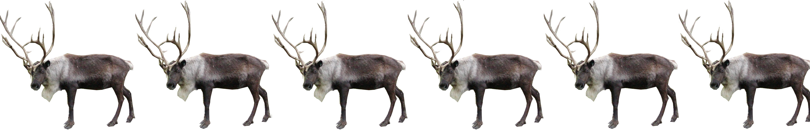

OEFENINGEN: Metaheuristieken
OEFENINGEN
bij
ALGORITMEN en GEGEVENSSTRUCTUREN
bij
ALGORITMEN en GEGEVENSSTRUCTUREN
2017-2018
- Week 12
- Metaheuristieken
13 december
2017

- De kerstman heeft het druk dezer dagen. Hij moet pakjes afleveren in 179 knooppunten. Gelukkig gaan alle pakjes in één slee. De nodige coördinaten staan opgeslagen in kerstnet.xml. Wat is de kortste weg die de kerstman kan nemen?
Hints:
Misschien helpen de klassen SimulatedAnnealing of ProbProb.
Een mogelijke heuristiek is om ergens te vertrekken en telkens door te gaan naar het dichtstbijzijnde nog niet bezochte knooppunt.